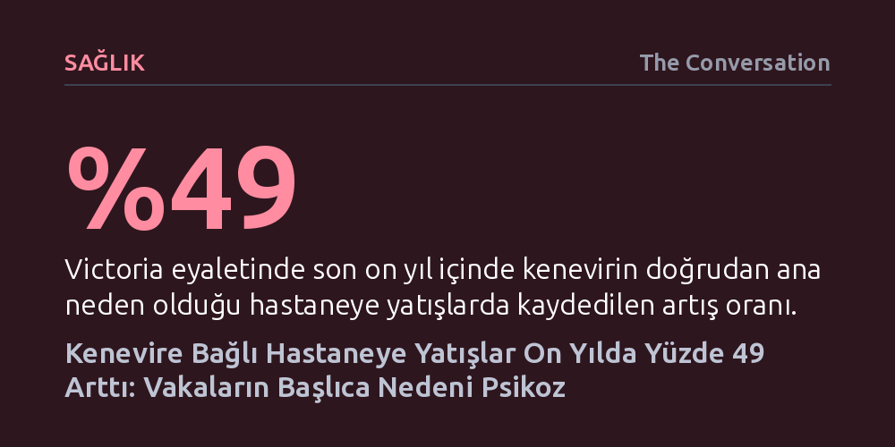

SAGLIK · The Conversation · 2026-10-13
Avustralya'da on yıllık verileri inceleyen yeni bir araştırma, kenevir kaynaklı hastaneye yatışların yüzde 49 arttığını ve bu vakaların yüzde 40'ından fazlasını psikotik bozuklukların oluşturduğunu ortaya koydu. En belirgin artış ise genç kadınlar ile 65 yaş üstü yetişkinlerde görüldü.
Kenevirin masum ve tehlikesiz olduğu yanılgısını yıkarak, yüksek etkili ürünlerin ve denetimsiz reçeteleme modellerinin özellikle genç kadınlar ve yaşlılarda ağır psikiyatrik krizlere yol açabildiğini somut verilerle ortaya koyuyor.

Avustralya'nın Victoria eyaletinde 2013 ile 2023 yılları arasındaki hastane kayıtlarını mercek altına alan kapsamlı bir araştırma, kenevir kullanımının yarattığı sağlık krizini gözler önüne serdi. On yıllık süreçte kenevirle bağlantılı toplam 39.565 hastane başvurusu incelenirken, kenevirin doğrudan ana yatış nedeni olduğu vakaların sayısı yüzde 49 oranında arttı. Ortaya çıkan tablo, hekimlerin son yıllarda kenevir kaynaklı psikiyatrik tablolara ilişkin dile getirdiği endişelerin ne denli haklı olduğunu somut olarak kanıtlıyor.
Hastaneye başvuruların ardındaki nedenler sıralandığında ilk sırayı açık ara farkla psikotik bozukluklar alıyor. Kenevirin birincil neden olduğu hastane yatışlarının yüzde 40,1'i doğrudan psikoz tablosuyla gerçekleşirken, zehirlenme vakaları tüm başvuruların yalnızca yüzde 12'sinden azını oluşturdu. Bu veriler, kenevir kullanımının yarattığı temel tehlikenin fiziksel bir aşırı doz zehirlenmesinden ziyade ciddi ruhsal kırılmalar olduğunu gösteriyor.
Yaşanan klinik krizlerin yüzeysel ya da geçici bir rahatsızlık olmadığını hastanede kalış süreleri de doğruluyor. Hastaların yüzde 68'i hastanede 24 saatten uzun süre müşahede altında tutulurken, ortalama yatış süresi tam bir haftayı buldu. Dahası, on yıllık dönem boyunca 1.500'den fazla kişinin durumunun ciddiyeti nedeniyle yoğun bakım ünitesine kaldırılması gerekti.
Hastaneye yatırılan hastaların genel profiline bakıldığında, 15 ile 24 yaş arasındaki genç erkekler halen en kalabalık hasta grubunu temsil etmeyi sürdürüyor. Ancak son on yıldaki değişim oranları incelendiğinde, vaka artış hızının en dramatik seviyelere ulaştığı kesimlerin genç kadınlar ve 65 yaş üstü yetişkinler olduğu görüldü.
Bu kaymanın ardında hem tüketim alışkanlıklarının hem de toplumsal normların dönüşümü yatıyor. Hayatında en az bir kez kenevir kullananların oranı genel nüfusta artarken, özellikle kadınlar arasında bağımlılık riskini katlayan sık ve yüksek riskli kullanım kalıpları yaygınlaşıyor. Eş zamanlı olarak kenevirin toplum nezdinde daha kabul edilebilir hale gelmesi, hastaların sağlık görevlilerine madde kullanımlarını daha açık ve rahat bir şekilde ifade etmelerine de zemin hazırlıyor.
Hastaneye başvuruların 2020 ve 2021 yıllarındaki pandemi döneminde zirve yapması tesadüfi bir gelişme değil. Karantina şartları, iş kayıpları ve derinleşen ruh sağlığı sorunları insanları kenevire yönlendirirken, atık su analizleri de bu dönemde tüketimin belirgin biçimde sıçradığını doğruladı. Sınır kapanmalarının diğer uyuşturucu rotalarını aksatmasına karşın, yerel kenevir tedariki neredeyse hiçbir kesintiye uğramadan erişilebilir kaldı.
Tablonun ağırlaşmasındaki en kritik etkenlerden biri de dolaşımdaki kenevir ürünlerinin etki gücünün hızla yükselmesi. Beyinde sarhoşluk ve zihinsel uyuşukluk hissini oluşturan temel psikoaktif bileşen olan THC (tetrahidrokanabinol) oranları arttıkça, acil servislerde görülen ağır psikiyatrik ataklar ve solunum yetmezliği reaksiyonları da şiddetleniyor.
Hastaneye yatışlardaki artışta yasal reçeteli tıbbi kenevirin mi yoksa yasa dışı ürünlerin mi daha büyük rol oynadığını netleştirmek oldukça güç; zira sağlık kayıt sistemleri bu iki kaynağı birbirinden ayıramıyor ve kullanıcıların önemli bir kısmı her ikisini birlikte tüketiyor. Ancak yasal sistem de tehlikeden muaf değil. Sağlık gerekçeleriyle solunabilir yüksek etkili ürünler tıbbi olarak önerilmemesine rağmen, reçetelerde yüzde 88'e varan THC oranına sahip bu tip ürünlere sıkça rastlanıyor. Yüksek hasta hacmine sahip çevrim içi teletıp kliniklerinin, kişilerin geçmiş psikiyatrik rahatsızlıklarını kapsamlı bir taramadan geçirmeden güçlü ürünler reçete etmesi ve hastaları düzenli takip etmemesi zararın boyutunu katlıyor.
Ortaya çıkan tablo yalnızca Victoria eyaletiyle sınırlı bir sorun teşkil etmiyor; Avustralya genelinde kenevir, yasa dışı opioidleri geride bırakarak hastaneye yatışa en fazla yol açan maddelerin başında yer alıyor. Uluslararası veriler de kâr odaklı ticari modeller aracılığıyla yasal erişim genişletildiğinde, kenevir kaynaklı psikoz vakalarının ve buna bağlı yatışların düzenli biçimde tırmandığını belgeliyor.
Mevcut halk sağlığı ve önleme kampanyaları geleneksel olarak genç kadınları ya da yaşlı yetişkinleri öncelikli hedef grup olarak görmüyor. Oysa en savunmasız kesimlerin verilerle net biçimde ortaya konması; bilgilendirme çalışmalarının güncellenmesi, teletıp üzerinden kenevir reçete edilmeden önce sıkı klinik taramaların zorunlu kılınması ve güvenlik düzenlemelerinin hızla değişen yüksek etkili ürün piyasasına uyumlu hale getirilmesi açısından hayati bir gereklilik oluşturuyor.